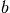

dipy.tracking.distances¶
Optimized track distances, similarities and clustering algorithms using track distances
-
dipy.tracking.distances.approx_polygon_track()¶ Fast and simple trajectory approximation algorithm by Eleftherios and Ian
It will reduce the number of points of the track by keeping intact the start and endpoints of the track and trying to remove as many points as possible without distorting much the shape of the track
Parameters: xyz : array(N,3)
initial trajectory
alpha : float
smoothing parameter (<0.392 smoother, >0.392 rougher) if the trajectory was a smooth circle then with alpha =0.393 ~=pi/8. the circle would be approximated with an decahexagon if alpha = 0.7853 ~=pi/4. with an octagon.
Returns: characteristic_points: list of M array(3,) points :
Notes
Assuming that a good approximation for a circle is an octagon then that means that the points of the octagon will have angle alpha = 2*pi/8 = pi/4 . We calculate the angle between every two neighbour segments of a trajectory and if the angle is higher than pi/4 we choose that point as a characteristic point otherwise we move at the next point.
Examples
Approximating a helix:
>>> t=np.linspace(0,1.75*2*np.pi,100) >>> x = np.sin(t) >>> y = np.cos(t) >>> z = t >>> xyz=np.vstack((x,y,z)).T >>> xyza = approx_polygon_track(xyz) >>> len(xyza) < len(xyz) True
-
dipy.tracking.distances.approximate_mdl_trajectory()¶ Implementation of Lee et al Approximate Trajectory Partitioning Algorithm
This is base on the minimum description length principle
Parameters: xyz : array(N,3)
initial trajectory
alpha : float
smoothing parameter (>1 smoother, <1 rougher)
Returns: characteristic_points : list of M array(3,) points
-
dipy.tracking.distances.bundles_distances_mam()¶ Calculate distances between list of tracks A and list of tracks B
Parameters: tracksA : sequence
of tracks as arrays, shape (N1,3) .. (Nm,3)
tracksB : sequence
of tracks as arrays, shape (N1,3) .. (Nm,3)
metric : str
‘avg’, ‘min’, ‘max’
Returns: DM : array, shape (len(tracksA), len(tracksB))
distances between tracksA and tracksB according to metric
-
dipy.tracking.distances.bundles_distances_mdf()¶ Calculate distances between list of tracks A and list of tracks B
All tracks need to have the same number of points
Parameters: tracksA : sequence
of tracks as arrays, [(N,3) .. (N,3)]
tracksB : sequence
of tracks as arrays, [(N,3) .. (N,3)]
Returns: DM : array, shape (len(tracksA), len(tracksB))
distances between tracksA and tracksB according to metric
See also
dipy.metrics.downsample
-
dipy.tracking.distances.cut_plane()¶ Extract divergence vectors and points of intersection between planes normal to the reference fiber and other tracks
Parameters: tracks : sequence
of tracks as arrays, shape (N1,3) .. (Nm,3)
ref : array, shape (N,3)
reference track
Returns: hits : sequence
list of points and rcds (radial coefficient of divergence)``
Notes
The orthogonality relationship np.inner(hits[p][q][0:3]-ref[p+1],ref[p+2]-ref[r][p+1]) will hold throughout for every point q in the hits plane at point (p+1) on the reference track.
Examples
>>> refx = np.array([[0,0,0],[1,0,0],[2,0,0],[3,0,0]],dtype='float32') >>> bundlex = [np.array([[0.5,1,0],[1.5,2,0],[2.5,3,0]],dtype='float32')] >>> res = cut_plane(bundlex,refx) >>> len(res) 2 >>> print(res[0]) [[ 1. 1.5 0. 0.70710683 0. ]] >>> print(res[1]) [[ 2. 2.5 0. 0.70710677 0. ]]
-
dipy.tracking.distances.intersect_segment_cylinder()¶ Intersect Segment S(t) = sa +t(sb-sa), 0 <=t<= 1 against cylinder specified by p,q and r
See p.197 from Real Time Collision Detection by C. Ericson
Examples
Define cylinder using a segment defined by
>>> p=np.array([0,0,0],dtype=np.float32) >>> q=np.array([1,0,0],dtype=np.float32) >>> r=0.5
Define segment
>>> sa=np.array([0.5,1 ,0],dtype=np.float32) >>> sb=np.array([0.5,-1,0],dtype=np.float32)
Intersection
>>> intersect_segment_cylinder(sa, sb, p, q, r) (1.0, 0.25, 0.75)
-
dipy.tracking.distances.larch_3merge()¶ Reassign tracks to existing clusters by merging clusters that their representative tracks are not very distant i.e. less than sqd_thr. Using tracks consisting of 3 points (first, mid and last). This is necessary after running larch_fast_split after multiple split in different levels (squared thresholds) as some of them have created independent clusters.
Parameters: C : graph with clusters
of indices 3tracks (tracks consisting of 3 points only)
sqd_trh: float :
squared euclidean distance threshold
Returns: C : dict
a tree graph containing the clusters
-
dipy.tracking.distances.larch_3split()¶ Generate a first pass clustering using 3 points on the tracks only.
Parameters: tracks : sequence
of tracks as arrays, shape
(N1,3) .. (Nm,3), where 3 points are (first, mid and last)indices : None or sequence, optional
Sequence of integer indices of tracks
trh : float, optional
squared euclidean distance threshold
Returns: C : dict
A tree graph containing the clusters.
Notes
If a 3 point track (3track) is far away from all clusters then add a new cluster and assign this 3track as the rep(representative) track for the new cluster. Otherwise the rep 3track of each cluster is the average track of the cluster.
Examples
>>> tracks=[np.array([[0,0,0],[1,0,0,],[2,0,0]],dtype=np.float32), ... np.array([[3,0,0],[3.5,1,0],[4,2,0]],dtype=np.float32), ... np.array([[3.2,0,0],[3.7,1,0],[4.4,2,0]],dtype=np.float32), ... np.array([[3.4,0,0],[3.9,1,0],[4.6,2,0]],dtype=np.float32), ... np.array([[0,0.2,0],[1,0.2,0],[2,0.2,0]],dtype=np.float32), ... np.array([[2,0.2,0],[1,0.2,0],[0,0.2,0]],dtype=np.float32), ... np.array([[0,0,0],[0,1,0],[0,2,0]],dtype=np.float32), ... np.array([[0.2,0,0],[0.2,1,0],[0.2,2,0]],dtype=np.float32), ... np.array([[-0.2,0,0],[-0.2,1,0],[-0.2,2,0]],dtype=np.float32)] >>> C = larch_3split(tracks, None, 0.5)
Here is an example of how to visualize the clustering above:
from dipy.viz import fvtk r=fvtk.ren() fvtk.add(r,fvtk.line(tracks,fvtk.red)) fvtk.show(r) for c in C: color=np.random.rand(3) for i in C[c]['indices']: fos.add(r,fvtk.line(tracks[i],color)) fvtk.show(r) for c in C: fvtk.add(r,fos.line(C[c]['rep3']/C[c]['N'],fos.white)) fvtk.show(r)
-
dipy.tracking.distances.lee_angle_distance()¶ Calculates angle distance metric for the distance between two line segments
Based on Lee , Han & Whang SIGMOD07.
This function assumes that norm(end0-start0)>norm(end1-start1) i.e. that the first segment will be bigger than the second one.
Parameters: start0 : float array(3,)
end0 : float array(3,)
start1 : float array(3,)
end1 : float array(3,)
Returns: angle_distance : float
Notes
l_0 = np.inner(end0-start0,end0-start0) l_1 = np.inner(end1-start1,end1-start1)
cos_theta_squared = np.inner(end0-start0,end1-start1)**2/ (l_0*l_1) return np.sqrt((1-cos_theta_squared)*l_1)
Examples
>>> lee_angle_distance([0,0,0],[1,0,0],[3,4,5],[5,4,3]) 2.0
-
dipy.tracking.distances.lee_perpendicular_distance()¶ Calculates perpendicular distance metric for the distance between two line segments
Based on Lee , Han & Whang SIGMOD07.
This function assumes that norm(end0-start0)>norm(end1-start1) i.e. that the first segment will be bigger than the second one.
Parameters: start0 : float array(3,)
end0 : float array(3,)
start1 : float array(3,)
end1 : float array(3,)
Returns: perpendicular_distance: float :
Notes
l0 = np.inner(end0-start0,end0-start0) l1 = np.inner(end1-start1,end1-start1)
k0=end0-start0
u1 = np.inner(start1-start0,k0)/l0 u2 = np.inner(end1-start0,k0)/l0
ps = start0+u1*k0 pe = start0+u2*k0
lperp1 = np.sqrt(np.inner(ps-start1,ps-start1)) lperp2 = np.sqrt(np.inner(pe-end1,pe-end1))
- if lperp1+lperp2 > 0.:
- return (lperp1**2+lperp2**2)/(lperp1+lperp2)
- else:
- return 0.
Examples
>>> print(lee_perpendicular_distance([0,0,0],[1,0,0],[3,4,5],[5,4,3])) 5.78788757324
-
dipy.tracking.distances.local_skeleton_clustering()¶ Efficient tractography clustering
Every track can needs to have the same number of points. Use dipy.tracking.metrics.downsample to restrict the number of points
Parameters: tracks : sequence
of tracks as arrays, shape (N,3) .. (N,3) where N=points
d_thr : float
average euclidean distance threshold
Returns: C : dict
Clusters.
See also
Notes
The distance calculated between two tracks:
t_1 t_2 0* a *0 \ | \ | 1* | | b *1 | \ 2* \ c *2is equal to where the euclidean distance between
t_1[0]andt_2[0],  betweent_1[1]andt_2[1]and between
between
t_1[2]andt_2[2]. Also the same with t2 flipped (sot_1[0]compared tot_2[2]etc).Visualization:
It is possible to visualize the clustering C from the example above using the fvtk module:
from dipy.viz import fvtk r=fvtk.ren() for c in C: color=np.random.rand(3) for i in C[c]['indices']: fvtk.add(r,fvtk.line(tracks[i],color)) fvtk.show(r)
Examples
>>> tracks=[np.array([[0,0,0],[1,0,0,],[2,0,0]]), ... np.array([[3,0,0],[3.5,1,0],[4,2,0]]), ... np.array([[3.2,0,0],[3.7,1,0],[4.4,2,0]]), ... np.array([[3.4,0,0],[3.9,1,0],[4.6,2,0]]), ... np.array([[0,0.2,0],[1,0.2,0],[2,0.2,0]]), ... np.array([[2,0.2,0],[1,0.2,0],[0,0.2,0]]), ... np.array([[0,0,0],[0,1,0],[0,2,0]])] >>> C = local_skeleton_clustering(tracks, d_thr=0.5)
-
dipy.tracking.distances.local_skeleton_clustering_3pts()¶ Does a first pass clustering
Every track can only have 3 pts neither less or more. Use dipy.tracking.metrics.downsample to restrict the number of points
Parameters: tracks : sequence
of tracks as arrays, shape (N,3) .. (N,3) where N=3
d_thr : float
Average euclidean distance threshold
Returns: C : dict
Clusters.
Notes
It is possible to visualize the clustering C from the example above using the fvtk module:
r=fvtk.ren() for c in C: color=np.random.rand(3) for i in C[c]['indices']: fvtk.add(r,fos.line(tracks[i],color)) fvtk.show(r)
Examples
>>> tracks=[np.array([[0,0,0],[1,0,0,],[2,0,0]]), ... np.array([[3,0,0],[3.5,1,0],[4,2,0]]), ... np.array([[3.2,0,0],[3.7,1,0],[4.4,2,0]]), ... np.array([[3.4,0,0],[3.9,1,0],[4.6,2,0]]), ... np.array([[0,0.2,0],[1,0.2,0],[2,0.2,0]]), ... np.array([[2,0.2,0],[1,0.2,0],[0,0.2,0]]), ... np.array([[0,0,0],[0,1,0],[0,2,0]])] >>> C=local_skeleton_clustering_3pts(tracks,d_thr=0.5)
-
dipy.tracking.distances.mam_distances()¶ Min/Max/Mean Average Minimum Distance between tracks xyz1 and xyz2
Based on the metrics in Zhang, Correia, Laidlaw 2008 http://ieeexplore.ieee.org/xpl/freeabs_all.jsp?arnumber=4479455 which in turn are based on those of Corouge et al. 2004
Parameters: xyz1 : array, shape (N1,3), dtype float32
xyz2 : array, shape (N2,3), dtype float32
arrays representing x,y,z of the N1 and N2 points of two tracks
metrics : {‘avg’,’min’,’max’,’all’}
Metric to calculate. {‘avg’,’min’,’max’} return a scalar. ‘all’ returns a tuple
Returns: avg_mcd : float
average_mean_closest_distance
min_mcd : float
minimum_mean_closest_distance
max_mcd : float
maximum_mean_closest_distance
Notes
Algorithmic description
Lets say we have curves A and B.
For every point in A calculate the minimum distance from every point in B stored in minAB
For every point in B calculate the minimum distance from every point in A stored in minBA
find average of minAB stored as avg_minAB find average of minBA stored as avg_minBA
if metric is ‘avg’ then return (avg_minAB + avg_minBA)/2.0 if metric is ‘min’ then return min(avg_minAB,avg_minBA) if metric is ‘max’ then return max(avg_minAB,avg_minBA)
-
dipy.tracking.distances.minimum_closest_distance()¶ Find the minimum distance between two curves xyz1, xyz2
Parameters: xyz1 : array, shape (N1,3), dtype float32
xyz2 : array, shape (N2,3), dtype float32
arrays representing x,y,z of the N1 and N2 points of two tracks
Returns: md : minimum distance
Notes
Algorithmic description
Lets say we have curves A and B
for every point in A calculate the minimum distance from every point in B stored in minAB for every point in B calculate the minimum distance from every point in A stored in minBA find min of minAB stored in min_minAB find min of minBA stored in min_minBA
Then return (min_minAB + min_minBA)/2.0
-
dipy.tracking.distances.most_similar_track_mam()¶ Find the most similar track in a bundle using distances calculated from Zhang et. al 2008.
Parameters: tracks : sequence
of tracks as arrays, shape (N1,3) .. (Nm,3)
metric : str
‘avg’, ‘min’, ‘max’
Returns: si : int
index of the most similar track in tracks. This can be used as a reference track for a bundle.
s : array, shape (len(tracks),)
similarities between tracks[si] and the rest of the tracks in the bundle
Notes
A vague description of this function is given below:
for (i,j) in tracks_combinations_of_2:
calculate the mean_closest_distance from i to j (mcd_i) calculate the mean_closest_distance from j to i (mcd_j)
- if ‘avg’:
- s holds the average similarities
- if ‘min’:
- s holds the minimum similarities
- if ‘max’:
- s holds the maximum similarities
si holds the index of the track with min {avg,min,max} average metric
-
dipy.tracking.distances.norm_3vec()¶ Euclidean (L2) norm of length 3 vector
Parameters: vec : array-like shape (3,)
Returns: norm : float
Euclidean norm
-
dipy.tracking.distances.normalized_3vec()¶ Return normalized 3D vector
Vector divided by Euclidean (L2) norm
Parameters: vec : array-like shape (3,) Returns: vec_out : array shape (3,)
-
dipy.tracking.distances.point_segment_sq_distance()¶ Calculate the squared distance from a point c to a finite line segment ab.
Examples
>>> a=np.array([0,0,0], dtype=np.float32) >>> b=np.array([1,0,0], dtype=np.float32) >>> c=np.array([0,1,0], dtype=np.float32) >>> point_segment_sq_distance(a, b, c) 1.0 >>> c = np.array([0,3,0], dtype=np.float32) >>> point_segment_sq_distance(a,b,c) 9.0 >>> c = np.array([-1,1,0], dtype=np.float32) >>> point_segment_sq_distance(a, b, c) 2.0
-
dipy.tracking.distances.point_track_sq_distance_check()¶ Check if square distance of track from point is smaller than threshold
Parameters: track: array,float32, shape (N,3) :
point: array,float32, shape (3,) :
sq_dist_thr: double, threshold :
Returns: bool: True, if sq_distance <= sq_dist_thr, otherwise False. :
Examples
>>> t=np.random.rand(10,3).astype(np.float32) >>> p=np.array([0.5,0.5,0.5],dtype=np.float32) >>> point_track_sq_distance_check(t,p,2**2) True >>> t=np.array([[0,0,0],[1,1,1],[2,2,2]],dtype='f4') >>> p=np.array([-1,-1.,-1],dtype='f4') >>> point_track_sq_distance_check(t,p,.2**2) False >>> point_track_sq_distance_check(t,p,2**2) True
-
dipy.tracking.distances.track_dist_3pts()¶ Calculate the euclidean distance between two 3pt tracks
Both direct and flip distances are calculated but only the smallest is returned
Parameters: a : array, shape (3,3)
a three point track :
b : array, shape (3,3)
a three point track :
Returns: dist :float :
Examples
>>> a = np.array([[0,0,0],[1,0,0,],[2,0,0]]) >>> b = np.array([[3,0,0],[3.5,1,0],[4,2,0]]) >>> print(track_dist_3pts(a, b)) 2.72157287598
-
dipy.tracking.distances.track_roi_intersection_check()¶ Check if a track is intersecting a region of interest
Parameters: track: array,float32, shape (N,3) :
roi: array,float32, shape (M,3) :
sq_dist_thr: double, threshold, check squared euclidean distance from every roi point :
Returns: bool: True, if sq_distance <= sq_dist_thr, otherwise False. :
Examples
>>> roi=np.array([[0,0,0],[1,0,0],[2,0,0]],dtype='f4') >>> t=np.array([[0,0,0],[1,1,1],[2,2,2]],dtype='f4') >>> track_roi_intersection_check(t,roi,1) True >>> track_roi_intersection_check(t,np.array([[10,0,0]],dtype='f4'),1) False